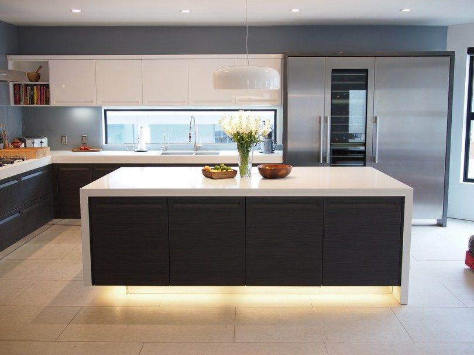

Finding simplicity in life
Life can get complicated really quickly, but it doesn't have to be! There are many ways to simplify your life, a few of which we've explored in the past. This week we're taking a bit of an approach though, in how you can find simplicity in the life you're already living.
CONTINUE READING

April 2018 | 2 comments